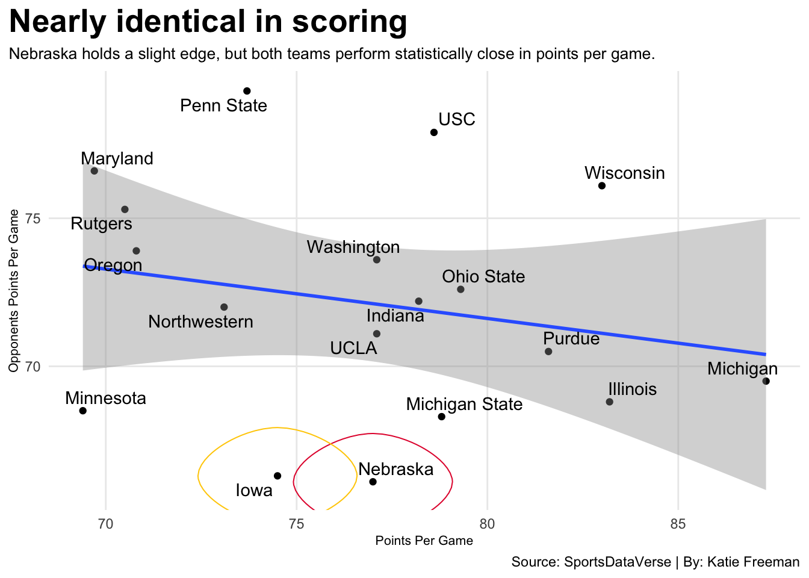
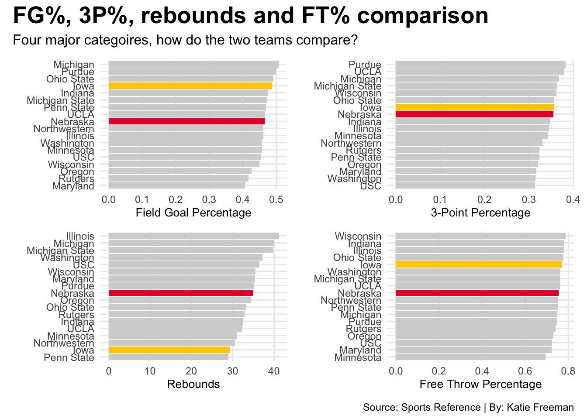
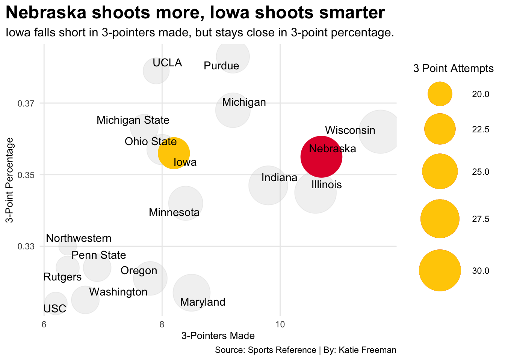

Code
library(tidyverse)
library(patchwork)
library(ggrepel)
library(ggalt)Katie Freeman
April 27, 2026
Comparing the rivalry between Nebraska and Iowa in the 2025-2026 basketball season.
On paper, Nebraska appeared to have the stronger resume. The Huskers ended the season 28-7, while Iowa finished 24-13. Nebraska also held the better record and a higher national ranking.
Although, records don’t always tell the full story. To understand how these teams actually performed, we need to go beyond wins and losses and examine how they compare across key metrics within the conference. So let’s take a closer look at some data compared to other Big Ten teams and see where Nebraska and Iowa really stand and who was truly better.
bigten <- read_csv("data/bigtenstats2526.csv")
nu <- bigten |>
filter(School == "Nebraska")
ia <- bigten |>
filter(School == "Iowa")
ggplot() +
geom_point(data=bigten, aes(x=PTS, y=Opp_PTS)) +
geom_smooth(data=bigten, aes(x=PTS, y=Opp_PTS), method="lm") +
geom_text_repel(data=bigten, aes(x=PTS, y=Opp_PTS, label=School)) +
geom_encircle(data=nu, aes(x=PTS, y=Opp_PTS), s_shape=.01, expand=.01, color="#e41c38") +
geom_encircle(data=ia, aes(x=PTS, y=Opp_PTS), s_shape=.01, expand=.01, color="#FFCD00") +
labs(
x="Points Per Game",
y="Opponents Points Per Game",
title="Nearly identical in scoring",
subtitle="Nebraska holds a slight edge, but both teams perform statistically close in points per game.",
caption="Source: SportsDataVerse | By: Katie Freeman"
) +
theme_minimal() +
theme(
plot.title = element_text(size = 20, face = "bold"),
axis.title = element_text(size = 8),
plot.subtitle = element_text(size=10),
panel.grid.minor = element_blank(),
plot.title.position = "plot"
) 
Nebraska and Iowa fall outside the typical range of Big Ten teams in points per game versus opponent points per game, but more importantly, they sit right next to each other.
Both teams averaged around 75 points per game while holding their opponents under 70 points. Nebraska had a slight edge in scoring margin, but overall, the two were far more similar than their records suggest.
To dig deeper, we can look at key categories like field goal percentage, 3-point percentage, rebounds and free throw percentage to compare the two teams from this season.
bar1 <- ggplot() +
geom_bar(data=bigten, aes(x=reorder(School, `FG%`), weight=`FG%`), fill="lightgrey") +
geom_bar(data=nu, aes(x=reorder(School, `FG%`), weight=`FG%`), fill="#e41c38") +
geom_bar(data=ia, aes(x=reorder(School, `FG%`), weight=`FG%`), fill="#FFCD00") +
coord_flip() +
labs(
x="",
y="Field Goal Percentage"
) +
theme_minimal()
bar2 <- ggplot() +
geom_bar(data=bigten, aes(x=reorder(School, `3P%`), weight=`3P%`), fill="lightgrey") +
geom_bar(data=nu, aes(x=reorder(School, `3P%`), weight=`3P%`), fill="#e41c38") +
geom_bar(data=ia, aes(x=reorder(School, `3P%`), weight=`3P%`), fill="#FFCD00") +
coord_flip() +
labs(
x="",
y="3-Point Percentage"
) +
theme_minimal()
bar3 <- ggplot() +
geom_bar(data=bigten, aes(x=reorder(School, TRB), weight=TRB), fill="lightgrey") +
geom_bar(data=nu, aes(x=reorder(School, TRB), weight=TRB), fill="#e41c38") +
geom_bar(data=ia, aes(x=reorder(School, TRB), weight=TRB), fill="#FFCD00") +
coord_flip() +
labs(
x="",
y="Rebounds"
) +
theme_minimal()
bar4 <- ggplot() +
geom_bar(data=bigten, aes(x=reorder(School, `FT%`), weight=`FT%`), fill="lightgrey") +
geom_bar(data=nu, aes(x=reorder(School, `FT%`), weight=`FT%`), fill="#e41c38") +
geom_bar(data=ia, aes(x=reorder(School, `FT%`), weight=`FT%`), fill="#FFCD00") +
coord_flip() +
labs(
x="",
y="Free Throw Percentage"
) +
theme_minimal()
bar1 + bar2 + bar3 + bar4 +
plot_annotation(
title = "Where Nebraska and Iowa separate in key metrics",
subtitle = "Field goal %, three-point %, rebounds and free throw % across the Big Ten.",
caption = "Source: Sports Reference | By: Katie Freeman"
) &
theme(
plot.title = element_text(size = 20, face = "bold"),
axis.title = element_text(size = 10),
plot.subtitle = element_text(size=12),
panel.grid.minor = element_blank()
)
Looking at shooting efficiency, Iowa separates itself. The Hawkeyes rank near the top in field goal percentage, outperforming the Huskers, indicating they are slightly more efficient in scoring.
From beyond the arc, the two teams are nearly identical, both sitting in the middle of the Big Ten, with Iowa holding a slight advantage on 3-point percentage.
Rebounding tells a different story. Nebraska holds a clear advantage, while Iowa ranks second to the bottom of the conference. This suggests Nebraska created more second-chance opportunities.
At the free throw line, Iowa sits slightly higher than Nebraska. Iowa ranks near the top of the Big Ten, while Nebraska remains more average.
Since the two teams were so similar in their three-point percentage, let’s take a deeper look at the three-point shooting for both teams.
ggplot() +
geom_point(
data=bigten,
aes(x=`3P`, y=`3P%`, size=`3PA`),
color="lightgrey",
alpha = .3) +
geom_point(
data=nu,
aes(x=`3P`, y=`3P%`, size=`3PA`),
color="#e41c38",
) +
geom_point(
data=ia,
aes(x=`3P`, y=`3P%`, size=`3PA`),
color="#FFCD00",
) +
scale_size(range = c(8,20), name="3 Point Attempts") +
geom_text_repel(
data=bigten,
aes(x=`3P`, y=`3P%`, label=School)
) +
labs(
x="3-Pointers Made",
y="3-Point Percentage",
title="Nebraska shoots more, Iowa shoots smarter from three",
subtitle="Iowa falls short in 3-pointers made, but stays close in 3-point percentage.",
caption="Source: Sports Reference | By: Katie Freeman"
) +
theme_minimal() +
theme(
plot.title = element_text(size = 16, face = "bold"),
axis.title = element_text(size = 10),
plot.subtitle = element_text(size=12),
panel.grid.minor = element_blank(),
plot.title.position = "plot")
Nebraska is known for volume shooting and Iowa is more selective but efficient. Nebraska takes more threes, and as a result, they make more overall. Iowa, on the other hand, prioritizes efficiency over quantity.
Nebraska and Iowa played multiple times throughout this season, with each team securing a win. But the most important game came in the Sweet 16, where Iowa secured a 77-71 win in the biggest game the two ever played with each other.
That last one mattered the most. When the season was on the line, Iowa shot better, defended better and ended up winning.
So, who was the better team?
Nebraska had the stronger season by traditional measures such as record, standings and overall resume. They were consistent from start to finish.
But Iowa proved to be the more dangerous team. Their efficiency, defensive strength and ability to perform under pressure ultimately defined them.
These visualizations highlight what standings alone cannot. Ultimately, Nebraska had the better season, but Iowa was the more complete team when it mattered most.